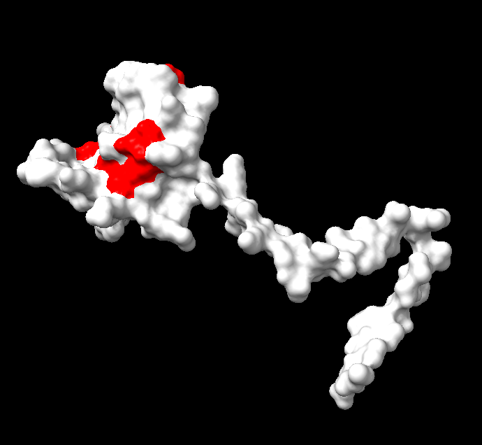
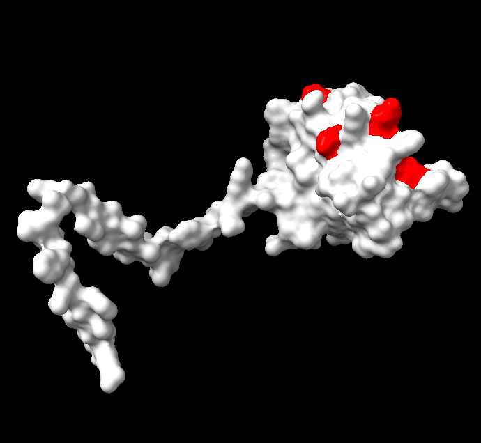
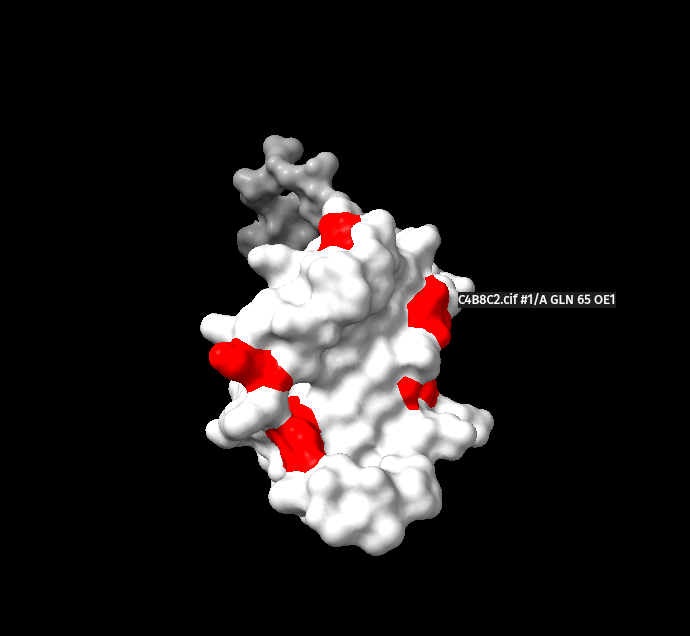
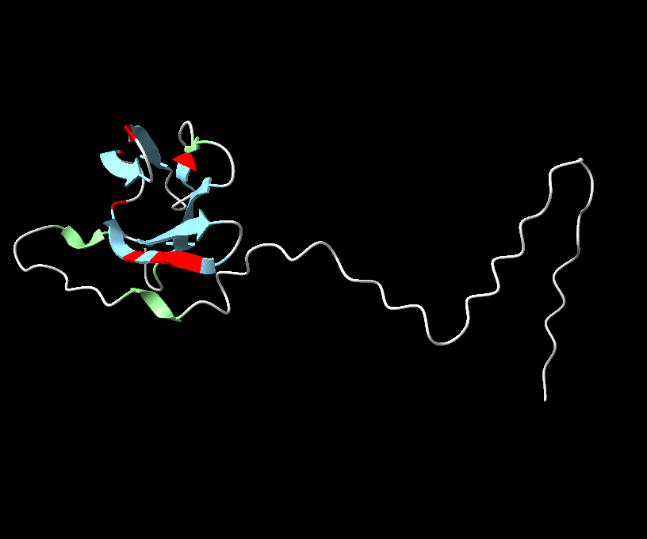
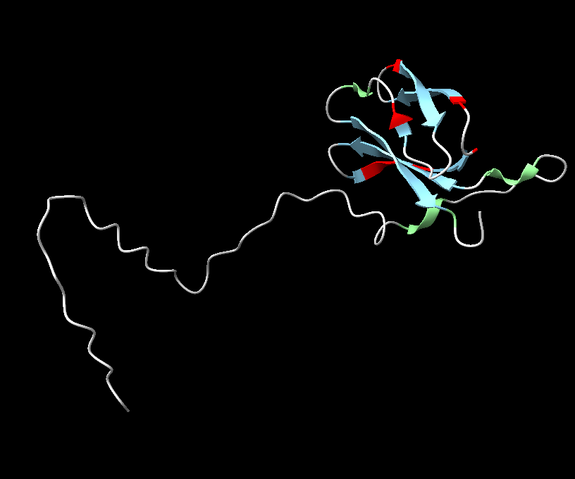
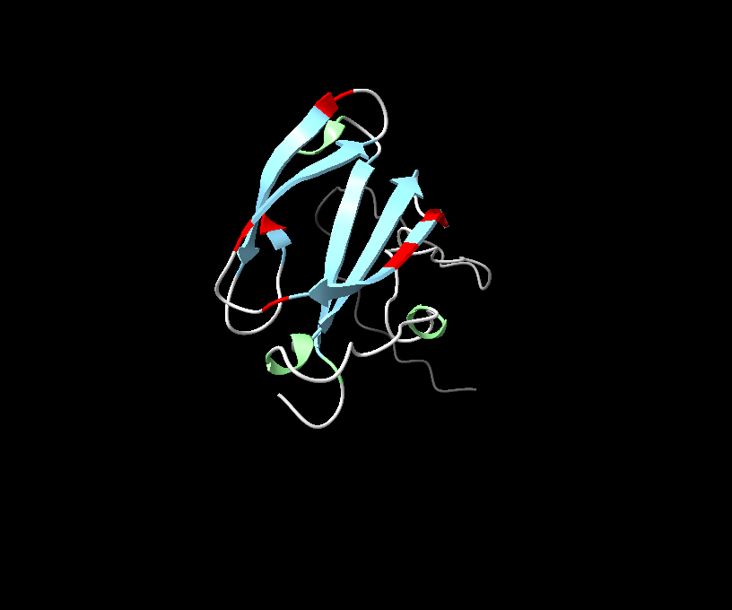
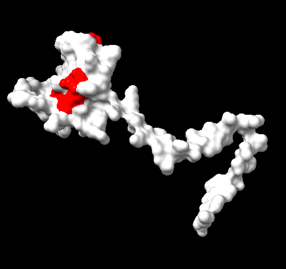
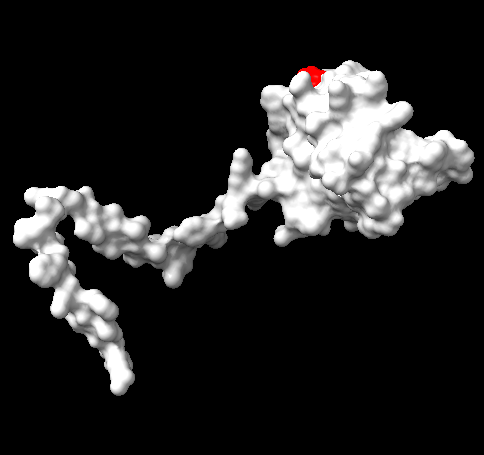
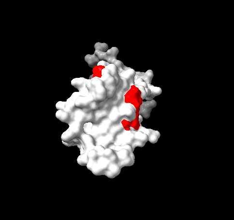

How the PhD moves from pathogen effector biology to protein design, receptor engineering, structural validation and genuine plant immunity.
No matching section. Try “SUSS”, “Pik”, “autoactivity” or “calcium”.
1 · What the project asks
The whole PhD in one view
If you are new, keep six words in view: an effector is a pathogen protein; an NLR is an intracellular plant immune receptor; a SUSS family shares a fold despite unrelated sequences; a binder recognises a chosen surface; autoactivity means signalling without the pathogen; a resistosome is an activated NLR assembly.
The project has two connected halves. First, map the structural diversity of pathogen effectors and find surfaces shared across families. Second, design binders and new receptor architectures that recognise those surfaces, remain inactive without the pathogen, and activate plant defence when the pathogen appears.
Collect effectors
Compare 3D folds
Find shared surface
Design binders
Build synthetic receptor
Solve structure
Test immunity
Half 1 · Map effector fold space
Effector sequences evolve rapidly, so related proteins may be invisible to sequence searches. Structure prediction and comparison can reveal sequence-unrelated, structurally similar—SUSS—families. The output is a ranked set of conserved surfaces worth targeting.
Half 2 · Build the receptor
Design binders to those surfaces, connect recognition to an immune switch, and make the receptor tractable enough for biochemical and structural work. The output must bind, signal specifically and ultimately reduce disease.
Structural families and conserved candidate surfaces.
2a · Binder design
RFdiffusion, ProteinMPNN, BindCraft, complex prediction and negative design.
Diverse, ranked binder sequences and structures.
2b · Receptor design
NLR domains, OFF/ON switching, sensor–helper compatibility, junctions and protein engineering.
Testable new-to-nature receptor architectures.
2c · Structural biology
Expression, purification, binding assays, crystallography and cryo-EM.
Experimental structures and mechanism.
2d · Plant biology
Transient expression, calcium reporters, RT-qPCR, cell-death and infection assays.
Evidence for signalling and resistance.
What is new
Earlier work usually placed a foreign binder inside a natural NLR such as Pikm-1. That proved recognition modules can be exchanged, but most constructs were either inactive or active all the time. This project goes further: it aims to design new-to-nature receptor architectures that are easier to express, purify, solve structurally and control.
An important open part of the PhD: RFdiffusion, ProteinMPNN and BindCraft are established routes for binder design. The project advert does not prescribe a validated recipe for designing an entire NLR architecture from scratch. Developing and testing that strategy is research, not a routine software step.
Core question: did the designed protein merely bind the effector, or did it create a controlled immune signal? Binding, activation and resistance are separate milestones.
2 · Biology you need
Why the receptor exists
Three layers of the interaction
1 · Surface detection
Pattern-recognition receptors detect common microbial features such as flagellin or chitin. This starts pattern-triggered immunity: calcium influx, reactive oxygen species, kinase cascades and defence-gene expression.
2 · Effector attack
Bacteria, fungi and oomycetes deliver effectors that alter host processes. Some suppress surface immunity; others obtain nutrients or reshape the cell. An effector is defined by its role in infection, not only immune suppression.
3 · Internal detection
Intracellular NLRs detect effectors directly or detect what they do to host proteins. This is effector-triggered immunity (ETI). Activation can assemble signalling complexes, induce defence genes and sometimes cause hypersensitive cell death.
Why plants need two detection layers
PTI detects broad microbial patterns. Effectors interfere from inside. ETI adds intracellular counter-detection.
How effectors reach an intracellular receptor
Bacterial plant pathogens use a type III secretion system: a pilus crosses the cell wall and a translocon forms a pore in the plant membrane. Fungi and oomycetes secrete proteins around invasive structures; some remain in the apoplast, while cytoplasmic effectors enter the plant cell. The route differs, but the design constraint is the same: an intracellular NLR can recognise only an effector that reaches the same compartment.
Delivery is also timed. Bacterial secretion machinery and cargo are co-regulated, while fungal effector sets change with developmental stage. Early, conserved effectors are attractive targets because recognition can occur while infection is still containable. Yet pathogens often carry redundant effectors and can delete a recognised, dispensable one. A broadly useful receptor should therefore target an effector—or a structural feature—that is difficult to lose.
Two routes to the same compartment
Only cytoplasmic effectors can meet an intracellular NLR. Delivery evidence is therefore part of target selection.
How bacterial and fungal effectors cross into the plant cell
Question
Bacteria
Fungi / oomycetes
Delivery machine
Type III basal body, Hrp pilus and translocon pore.
Invasive hypha or haustorium; no T3SS.
What activates delivery?
Apoplast chemistry and the Hrp regulatory programme—not a known plant “receptor X.”
Host contact and developmental stage of infection.
How the wall is crossed
Pilus physically spans the plant cell wall.
Hypha penetrates the wall while the plant membrane remains invaginated around it.
Final membrane step
Effector passes through the translocon.
Effector is secreted at a specialised interface; how it crosses the plant membrane varies and is often unresolved.
Effector during transit
Threaded through a narrow channel in an unfolded state, then refolds inside.
Secreted into the host–pathogen interface, then delivered or taken up.
What this project targets
The mature, folded cytoplasmic effector—not its secretion signal or transit state.
Shared logic: the engineered NLR is already present. Bacteria and fungi/oomycetes deliver effectors differently, but cytoplasmic recognition can activate Ca²⁺ signalling, defence genes and resistance.
Infection compared directly: bacterium versus fungus
Comparison
Bacteria
Fungi / oomycetes
Delivery hardware
Type III pilus and translocon.
Conventional secretion plus specialised host–pathogen interface.
Timing logic
Regulon and secretion queue.
Developmental/infection-stage programme.
Candidate clue
T3SS signal, promoter context, chaperone or translocation evidence.
Signal peptide, no transmembrane anchor, effector prediction and stage expression.
Relevant target
Injected cytoplasmic effector.
Cytoplasmic—not apoplast-only—effector.
What makes an effector worth targeting
Prefer
Why
Avoid
Core across strains
Broad coverage; deletion is less likely to provide easy escape.
Rare or strain-specific effectors.
Fitness-critical or non-redundant
Losing it should reduce virulence.
One of many interchangeable suppressors.
Early and cytoplasmic
The receptor can respond before defence is dismantled.
Late or apoplast-only proteins.
Member of a conserved structural family
One recognition strategy may cover several sequence-divergent effectors.
A unique fold with a highly variable surface.
Three interpretation rules
Topic
Use it for
Do not conclude
Effector clues
Bacterial hrp/PIP motifs and fungal infection-stage expression help rank candidates.
Prediction alone proves delivery or importance; prefer experimental translocation and virulence evidence.
NLR activation
The sensor recognises; a helper may signal. Test a low OFF state and an effector-dependent ON state using calcium kinetics and defence genes.
Every NLR uses the ZAR1 calcium-channel mechanism. GCaMP or aequorin reports calcium; it does not prove the mechanism.
Cell death
Use it as one late immune readout alongside calcium, defence genes and infection resistance.
Cell death alone proves immunity: overexpression or toxicity can mimic it, and necrotrophs may benefit.
3 · The engineering idea
Target the conserved; control the switch
From a SUSS family to a usable target
Sequence searches may miss effectors that have diverged in sequence but retained the same 3D fold. Structural comparison groups them into sequence-unrelated, structurally similar—SUSS—families.
Selection rule: choose a connected surface that is conserved across the family and exposed in every relevant conformation or complex. Use the minimum exposure—not the average—because one buried state can block recognition. Targeting this constrained surface may also make pathogen escape more costly.
How the target surface is narrowed
1
Start: one structural family
Several effectors share the same 3D fold, even if their sequences differ.
InputAll surfaces on all family members.
2
Keep shared residues
Compare the family and remove positions that vary between members.
QuestionIs this residue conserved across the family?
3
Keep accessible residues
Remove residues hidden by folding, movement, oligomerisation or host binding.
QuestionCan a binder reach it in every relevant state?
4
Output: invariant face
A connected, conserved and exposed surface suitable for binder design.
UseDesign the binder against this patch.
In one line: same fold → shared residues → always accessible → one bindable target patch.
Recheck after binder design
What could still fail
Test
Failure
Family members
The binder may extend beyond the conserved patch and contact variable edge residues.
Test the designed binder against every intended member.
An important member loses binding.
Conformations
A valid patch may still move enough to disrupt the designed binder pose.
Test the complex against multiple relevant conformations.
The binder clashes or detaches in a plausible conformation.
Biological states
Oligomerisation or host binding may obstruct the binder even if the patch itself remains exposed.
Test monomeric, assembled and host-bound models where relevant.
A partner blocks the binder's approach or binding pose.
Then check escape and specificity: avoid an epitope lost by one low-cost mutation, and exclude similar plant surfaces that could cause off-target activation.
“Invariant” is conditional on the structures sampled. AlphaFold seeds explore less than real molecular dynamics, many effector functions are unknown, and a conserved exposed face may still be too flat or polar to bind well. Laboratory testing remains the arbiter.
Binder, sensor and helper are different parts
Binder
The designed recognition module that contacts the selected effector surface.
Sensor receptor
The protein that contains the recognition module and must convert binding into activation.
Helper receptor
The partner that supports downstream signalling in paired systems.
Reference architecture: Pik sensor plus helper
The binder changes recognition. The sensor must still switch correctly, and the helper must remain compatible. The PhD ultimately aims beyond this graft toward a designed receptor architecture.
What the domains do
CC: N-terminal signalling region in this NLR class.
HMA: Pik-1's integrated bait and the benchmark replacement site.
NB-ARC: nucleotide-controlled switch between inactive and active states.
LRR: regulatory region that helps maintain and release the OFF state.
Three fit problems—and when to test them
Fit gate
Main variables
When and how to test
Pass condition
1 · Binder–target
Interface geometry, affinity and specificity.
After binder design: model the complex, then measure binding to family members and off-targets.
Strong, specific binding across the intended effector family.
2 · Fusion
Insertion position, binder orientation, termini and linker.
Before and after cloning: model junctions; then check expression, folding, localisation and retained binding.
A stable, correctly located fusion that still binds.
3 · Whole receptor
Regulatory contacts, helper allele and expression level.
In plant cells, before infection tests: compare matched constructs without and with effector.
Low baseline when effector is absent; strong signalling when it is present.
Test in order: binding → fusion quality → OFF/ON switching → pathogen resistance. Passing one gate does not guarantee the next.
Why Pik is useful—but not the final answer
Benchmark: Pik-1 is a sensor NLR whose HMA domain binds AVR-Pik; Pik-2 is its helper. Available structures, plasmids and controls make this pair useful for testing binder replacement.
Limitation: HMA also supports receptor geometry and regulation. Replacing it can cause misfolding, constitutive activation or failure to signal.
New-to-nature: a designed receptor architecture that still recognises, switches and signals correctly. Adding a tag to a natural receptor does not qualify.
The hard part is coupling. A binder can recognise its target perfectly while the receptor remains dead. It can also destabilise the OFF state and make the receptor autoactive. Design must address recognition and switching together.
4 · Computational workflow
From pathogen genomes to testable receptors
What moves through the pipeline
Each gate removes weak candidates and records why. Experimental results loop back to improve target choice, design settings and filters.
Step 1 · Build a trustworthy effector set
Start with experimentally supported effectors from the literature and resources such as PHI-base. Expand systematically across pathogen proteomes. For fungi and oomycetes, SignalP finds secretion signals, DeepTMHMM removes likely membrane proteins, and EffectorP ranks effector candidates; for bacteria, use type III secretion predictors such as EffectiveT3, T3SEpp or BastionX. These predictions prioritize proteins—they do not prove effector function.
Record organism, strain, mature sequence, delivery route, intracellular destination, evidence level and virulence phenotype. Keep a small curated control set of known effectors and non-effectors. It reveals whether the pipeline behaves sensibly before it is applied at scale.
Searching UniProt for the word “effector” is not exhaustive. Many real effectors are annotated only as “uncharacterised protein” because effector identity depends on infection function, not a universal sequence motif. Separate two jobs: use known effectors as a trusted learning and control set; predict new candidates from complete proteomes as a discovery set.
The fungal and oomycete discovery funnel
Bacteria need a different branch: type III secretion prediction, promoter context, chaperone evidence and experimental translocation data. EffectorP is not a bacterial-effector predictor.
The discovery set should be broad enough to find unexpected families. The control set should be small, manually checked and structurally diverse. Useful landmarks include AVR-Pik effectors and their MAX fold, FoSSP17 from the designed-binder precedent, and Pwl2 from the engineered OsHIPP43 receptor study. They are examples and controls—not automatic targets for this PhD.
Step 2 · Predict and compare structures
Use experimental structures where available and AlphaFold-style predictions elsewhere. Trim secretion peptides and disordered tails only with a recorded rationale. Inspect confidence and domain boundaries. Foldseek can search and cluster structures quickly; detailed structural alignment then confirms whether a proposed family shares a meaningful core fold.
Step 3 · Select the target face
Map conservation and solvent accessibility onto aligned structures. Inspect the family, biological assemblies and candidate surfaces directly in ChimeraX. Remove residues that are variable, buried in any important conformer, part of an oligomer interface, or likely to be inaccessible in the host cell. Check the plant proteome for similar surfaces to reduce off-target risk. The output is a defined residue patch with explicit supporting evidence.
Where ChimeraX fits: it is the structural inspection and measurement workspace that connects the automated stages. It does not generate binders or predict immunity; it lets you see whether the files and structural claims are physically sensible.
Workflow point
Use ChimeraX to
Result passed onward
Target preparation
Open PDB or AlphaFold models; identify chains, domains, missing regions, signal peptides, confidence and biological assemblies.
Clean, correctly numbered target structure.
Surface selection
Colour conservation and confidence; display molecular surfaces; inspect exposure across aligned family members, oligomers and conformers; select hotspot residues.
Defensible target face and residue list.
Binder quality control
Inspect hotspot contacts, hydrogen bonds, hydrophobic packing, electrostatics and steric clashes; align design and prediction and measure RMSD.
Geometrically credible binder–target complexes.
Receptor integration
Place the binder in the receptor context; inspect termini, linkers, accessibility and clashes with CC, NB-ARC, LRR or helper models.
Fusion geometries worth testing.
Experimental comparison
Superimpose the predicted complex on X-ray or cryo-EM structures and map where the interface or receptor state differs.
Measured design accuracy and mechanistic hypotheses.
ChimeraX can run scripted or headless checks for scale, but hotspot choice and interpretation still require human inspection. A visually attractive model is not evidence of binding or signalling.
Step 4 · Generate binders
Protein design works in a loop. RFdiffusion first invents a three-dimensional binder backbone around the chosen target residues. ProteinMPNN then asks which amino-acid sequences could fold into that backbone. AlphaFold-style prediction checks whether each proposed sequence returns to the intended fold and binding pose. BindCraft provides an alternative integrated design-and-filtering route. Generate many candidates: most will fail later, and closely related designs do not provide independent chances of success.
Step 5 · Predict complexes and filter
Predict each binder–target complex and compare it with the intended design. Useful checks include interface confidence, target and binder confidence, backbone deviation, contacts, buried surface and steric clashes. No single score proves binding. Cutoffs should be fixed before selection and calibrated on known examples rather than changed to rescue a poor run.
Metric or check
Question it helps answer
Common mistake
pLDDT
Is each local region predicted confidently?
Treating high local confidence as proof that two proteins bind.
Interface PAE
Is the relative binder–target placement confident?
Using a literature cutoff without calibrating the current model and target.
Backbone RMSD
Did the sequence prediction retain the designed backbone and pose?
Accepting a low global RMSD while the interface has shifted.
Contacts / buried area
Is there a substantial, chemically plausible interface?
Counting contacts without checking clashes or hotspot engagement.
Clashes
Are atoms or receptor domains placed impossibly close?
Checking the isolated complex but not the full fusion.
AlphaFold confidence is model confidence, not experimental evidence. Low-confidence loops should not define critical hotspots. Always confirm chain labels and residue numbering after trimming: silent numbering errors can make an otherwise correct run target the wrong residues.
Step 6 · Test breadth, specificity and diversity
Model surviving binders against relevant family members, escape variants and plant proteins. Keep designs that preserve the intended pose across targets and reject likely off-targets. Cluster the survivors by structure and sequence, then select representatives from several clusters. Ordering ten near-identical designs is not equivalent to testing ten independent solutions.
Step 7 · Design the receptor context
Model the complete receptor, not only the isolated binder. Check insertion site, linker length, termini orientation, clashes with neighbouring domains and compatibility with helper candidates. The model can reject impossible geometries; it cannot demonstrate the OFF state or signal relay. Those remain experimental questions.
Tool or analysis
What it contributes
What it does not establish
SignalP / EffectorP / T3SS predictors
Prioritise secreted or delivered candidates.
Virulence function or intracellular localisation.
AlphaFold / ColabFold
Predicted structures and confidence estimates.
One true conformation or receptor activation.
Foldseek / structural alignment
Fold relationships and structural families.
A conserved accessible binding site.
ChimeraX
Human inspection, measurements, alignments, surface mapping, contacts and clash checks.
True affinity, cellular folding, ON/OFF behaviour or resistance.
RFdiffusion
Binder backbones around chosen hotspots.
A sequence that expresses, binds or signals.
ProteinMPNN
Sequences compatible with a backbone.
Correct complex formation in the plant.
Complex prediction and scoring
Pose consistency and early rejection of poor designs.
Affinity, specificity, OFF state or immunity.
Every stage needs a gate. Record inputs, chain names, residue numbering, software versions, seeds, scores and reasons for rejection. If a design fails, return to the stage that created the relevant assumption instead of changing every parameter at once.
4 · Complete workflow
Inputs, tools, examples, gates and mistakes
H · human judgementC · computationL · laboratory
Examples show the shape of the work, not validated settings. Replace placeholder accessions, chains, residue numbers and cutoffs; follow the current tool documentation and host-lab SOPs.
The unit of design is a SUSS family and its shared surface, not a whole pathogen. Choose a pathogen → collect its effectors → cluster into SUSS families → pick the best family → find its shared surface → design a binder for that surface. A pathogen carries hundreds of effectors in many unrelated folds, so one binder cannot cover them all. To cover more of a pathogen, repeat the last three steps for another family: each family needs its own binder and its own receptor. You can also go the other way and follow one family across several pathogens, because SUSS families can span species; for example, MAX effectors occur in both M. oryzae and P. tritici-repentis.
End-to-end map
Failures loop backward: no binding → steps 5–9; binding but no signal → step 10; autoactivity → steps 10, 12 and 15; signalling without protection → steps 0–2 and 16.
InputSpecies/strain names, taxon IDs, reference proteome IDs, published effector names.
DoDownload complete proteomes as FASTA; separately curate experimentally supported effectors, virulence phenotypes and delivery evidence.
ExampleUniProt: search a reference proteome, export accession, name, length and FASTA; PHI-base: search organism or gene and record mutant phenotype.
Gate / outputproteome.fasta plus a curated evidence table with accession, strain and source.
Do notSearch only for the word “effector”; merge strains silently; assume “uncharacterised protein” means irrelevant.
Step 1 in practice · the 10 test effectors
A small control set for testing the pipeline. Pwl2 and AVR-Pii have low AlphaFold confidence, so treat their models with care.
#
Protein
UniProt
Organism
Length
AlphaFold mean pLDDT
Expected fold
Role in the test
1
AVR-Pik (variant 1)
C4B8C2
M. oryzae
113
82.1
MAX
MAX positive; has PDB structures
2
AVR-Pikm
C4B8B9
M. oryzae
113
82.6
MAX
Near-identical to #1, so a sanity check
3
AVR-Pia
B9WZW9
M. oryzae
85
87.1
MAX
MAX positive; has PDB structures
4
AVR-Pib
A0A0H4ITX1
M. oryzae
74
77.9
MAX
MAX positive; has PDB structure 5Z1V
5
ToxB
Q9C173
P. tritici-repentis
87
82.4
MAX-like
Different species, so a cross-species positive
6
toxb
Q8J0U6
P. tritici-repentis
88
81.6
MAX-like
Natural inactive homolog, so a contrast within the family
7
Pwl2
G5EI71
M. oryzae
145
57.4
Reported as MAX-like
Binds OsHIPP43. Low pLDDT, so check its structure with extra care
8
AVR-Pii
C4B8B7
M. oryzae
70
63.8
Non-MAX
Negative control
9
AVR-Pita
F7J183
M. oryzae
224
81.6
Non-MAX (metalloprotease-like)
Negative control
10
AvrRpt2
Q6LAD6
P. syringae
255
74.1
Cysteine protease
Bacterial outlier
Step 1 in practice · what to search and download from UniProt
#
Step
Input → command
Output
How to decide / what to consider
1
Scope
Practice: rice blast fungus (M. oryzae, taxon 318829), one wheat pathogen (P. tritici-repentis, taxon 45151) and one bacterium (P. syringae).
A defined pathogen set
Fungal and bacterial effectors need different prediction tools later. Keep them separate.
2a
UniProt search: MAX effectors and negative controls
Advanced search or search box: (gene:AVR-Pik OR gene:AVR-Pia OR gene:AVR-Pib OR gene:AVR-Pii OR gene:AVR-Pita OR gene:PWL2) AND (taxonomy_id:318829)
Several entries per AVR (alleles, duplicates)
Pick one entry per gene or allele (C4B8C2, C4B8B9, B9WZW9, A0A0H4ITX1, C4B8B7, F7J183, G5EI71). Leave out ACE1: it matches the query but is a polyketide synthase, not an effector.
2b
UniProt search: ToxB (wheat pathogen)
gene:ToxB AND taxonomy_id:45151
ToxB and toxb entries
Take Q9C173 (ToxB) and Q8J0U6 (toxb, the natural inactive homolog).
2c
UniProt search: bacterial outlier
gene:avrRpt2 AND organism_name:syringae
Q6LAD6 (AvrRpt2)
Filters such as reviewed:true AND taxonomy_id:317 returned nothing for AvrPto. Drop them when searching bacteria.
2d
Not found by gene name
AVR1-CO39 and FoSSP17 returned nothing from UniProt gene-name searches.
Accessions to look up
Take the accession from the publication or from PHI-base.
2e
Download FASTA
Entry page → Download → FASTA, or https://rest.uniprot.org/uniprotkb/<ID>.fasta. Merge into all_10_effectors.fasta.
One FASTA per effector plus a merged file
Full-length sequence including the signal peptide. Trim to the mature protein later.
2f
Download AlphaFold model
Entry page → Structure → AlphaFold → PDB or mmCIF, or https://alphafold.ebi.ac.uk/api/prediction/<ID>. Also fetch the PAE JSON and note the mean pLDDT.
<ID>.pdb, PAE JSON, pLDDT
Pwl2 (57) and AVR-Pii (64) have low confidence. Low pLDDT means don’t trust the model.
2g
Download experimental structures
Take the PDB IDs from the Structure section of each entry (for example AVR-Pik 6FUB, AVR-Pia 6Q76, AVR-Pib 5Z1V, ToxB 2MM0, Pwl2 8R7A) and download from rcsb.org.
Experimental coordinate files
Experimental structures beat AlphaFold models. Use them as references and for validation.
2h
Cross-check virulence evidence
Search each effector name in PHI-base and record the mutant phenotype.
Phenotype column in the evidence table
Most UniProt entries here are unreviewed (TrEMBL). PHI-base provides the experimental support.
TM-score of at least about 0.5 means the same fold. Use alntmscore and check coverage (alnlen against protein length). Trim low-pLDDT tails first, because floppy tails lower the score.
Compare with the expected folds: the MAX effectors should cluster; AVR-Pii, AVR-Pita and AvrRpt2 should stay apart. If not, adjust thresholds and re-run before going on.
8
Call SUSS families
Join 6a and 7a (pandas or R)
One table: pair, % identity, TM-score, SUSS yes/no
A pair is SUSS if TM-score is at least 0.5 and identity is below 30%. A family is a connected group of SUSS pairs. Make a heatmap or tree of the TM-score matrix as a figure. Then check each member is cytoplasmic.
5
Find the invariant target face
H + C · target
ToolsChimeraX, structural alignment, conservation/SASA scripts, biological assemblies and conformer ensemble.
InputAligned family members, variants, oligomers, host-bound states and confidence maps.
DoIntersect conservation with minimum exposure; remove oligomer/host-occluded, flexible, glycosylated or plant-like surfaces; choose 3–6 plausible hotspot residues for a pilot.
ExampleChimeraX: color bychain, surface, contacts; save residue list such as A30,A33,A34.
Gate / outputtarget_clean.pdb, hotspot list, figures and written biological rationale.
Do notUse average exposure; select low-confidence loops; choose a face visible only in one monomer or one family member.
Step 5 in practice · from alignment to a target face
#
Step
Input → command
Output
How to decide / what to consider
9a
Structure-based alignment of one family
Family members → foldmason easy-msa fam/*.pdb o6_foldmason tmp or ChimeraX matchmaker #2-8 to #1
A residue-to-residue alignment and superimposed structures
This gives the residue correspondence. Use an experimental structure (for example AVR-Pik 6FUB) as the reference when possible. Don’t align across different families.
9b
Conservation per position
The alignment → score each column (Shannon entropy or ConSurf-style) and note residue type
A conservation value per residue
Conserved type (hydrophobic, charged) can matter as much as identity. Include allele variants (Pik, Pikm): they show which positions the pathogen can still mutate.
9c
Surface exposure
Each model, mature region only → FreeSASA or ChimeraX measure sasa
Relative solvent accessibility per residue
Keep residues above about 25% relative accessibility. Buried conserved residues are structural and can’t be bound.
9d
Map onto the 3D surface
ChimeraX: colour the reference by conservation, then add coulombic and hydrophobicity
Images and a residue list for each face
Look for contiguous conserved, exposed patches of roughly 600–800 Ų or more that are not too flat. Avoid mostly polar or charged faces.
10
Test the face is stable
Run 5 or more AlphaFold seeds per member, superimpose and compare the face (RMSD, side-chain positions); optionally short MD
Per-face RMSD and per-residue variation
Faces that move between seeds are poor targets. Seeds under-sample real motion, so “stable” here is a weak claim.
11
Rank target faces
Score each candidate face on conservation, exposure, stability, size and shape, and number of family members and isolates covered
A ranked list and one chosen face on one family
Consider whether the face is the host-target binding face: it is conserved for a reason, and the pathogen may find it hard to mutate. Choose a face the receptor can reach once fused. Check whether a known NLR already binds it (for example the HMA domain on the AVR-Pik MAX face).
DoRun a small pilot; inspect hotspot contact and target cropping; then scale to hundreds or thousands while logging every configuration.
Syntax example'contigmap.contigs=[A1-120/0 70-100]' and 'ppi.hotspot_res=[A30,A33,A34]'; replace all placeholders.
Gate / outputCompact backbone PDBs contacting the intended face without gross clashes.
Do notAssume the generated poly-glycine-like backbone is a usable sequence; crop a target so buried hydrophobics become false hotspots; trust chain order.
InputSurviving binders, all family members, prevalent variants, plausible escape mutants and plant proteins.
DoRe-predict every binder across the family; test epitope mutations; reject host-like interfaces; cluster survivors and cap designs per cluster.
ExampleMatrix: rows = binders; columns = family members/off-targets; cells = pose retained, interface confidence and clashes.
Gate / outputBroad, specific candidates from several independent structural clusters.
Do notOrder ten near-identical sequences; report breadth from the design target alone; treat an incomplete plant structure set as proof of zero off-targets.
10
Place binders into receptor architectures
H + C · receptor
ToolsAlphaFold/ColabFold for hypotheses; ChimeraX for full-context inspection; published Pik structures and helper-compatibility data as benchmark.
DoModel whole constructs; vary a limited, hypothesis-driven set of junctions; check termini geometry, accessibility and clashes with CC/NB-ARC/LRR; include several helpers.
Gate / outputStructurally plausible receptor panel with explicit OFF/ON hypothesis and matched controls.
Do notAssume an isolated binder fit means receptor fit; call static OFF/ON predictions a mechanism; treat Pik grafting as the final new-to-nature architecture.
ExampleOFF without target; ON only with cognate target; intact protein at comparable abundance.
Gate / outputSpecific immune programme with low basal cost—not cell death alone.
Do notScore autoactivity as success; use one dead patch as proof; ignore necrotroph biology or overexpression artefacts.
16
Demonstrate protection and learn from failure
L · value
UseApproved plant/pathogen facilities, pathogen-growth or disease assays, relevant isolates/variants, stable expression and growth assessment.
InputReceptors that passed protein, binding and ON/OFF gates.
DoMeasure pathogen burden/disease, escape breadth and uninfected growth cost; feed results back to the exact failed assumption.
ExampleBinding/no signal → redesign step 10; signal/no protection → revisit timing and target value at steps 0–2.
Gate / outputReduced disease with acceptable plant growth and documented breadth.
Do notClaim field value from transient expression; use an irrelevant pathosystem; stop recording designs that failed.
5 · Experimental proof
Recognition is only the first rung
What must happen after binding
Each arrow is a separate claim that needs evidence. A construct can pass one step and fail the next.
1 · ProteinExpressed, soluble and intact
2 · BindingSpecific interaction and kinetics
3 · SignallingControlled immune activation
4 · ResistanceReduced pathogen growth or disease
Protein production and binding
First confirm that the binder and target can be produced in a suitable system and remain soluble. Size-exclusion chromatography tests whether the sample is monodisperse or aggregated. BLI or SPR measures binding strength and kinetics; co-immunoprecipitation asks whether tagged proteins associate in a biological extract. Each assay needs a non-binding mutant or unrelated protein control.
A positive co-IP band supports association, but it does not prove direct binding, affinity or a defined interface. Conversely, purified-protein binding does not prove that the proteins meet or signal in a plant cell. Use orthogonal assays because each answers a different question.
How co-IP works
Co-express differently tagged bait and prey in a leaf.
Keep an input sample to prove both accumulated.
Capture the bait with tag-specific beads.
Wash, elute and blot separately for bait and prey.
How to read it
Prey only in the cognate IP supports specific association.
Prey in unrelated or no-tag lanes suggests nonspecific sticking.
No prey in the input is an expression failure, not “no binding.”
No captured bait makes the prey blot uninterpretable.
Specificity matters twice
A binder operates among thousands of plant proteins. Binding an endogenous protein may activate the receptor even without the pathogen, appearing as autoactivity rather than an obvious binding artefact. Screen predicted plant off-targets and close host relatives during design; use unrelated-effector and no-effector controls during screening. For advanced candidates, co-IP followed by mass spectrometry can reveal unexpected partners, and pathogen-free plant growth can expose a chronic fitness cost.
Structural validation
X-ray crystallography is well suited to a compact binder–effector complex. It can show whether the design reached the intended fold and contacted the intended surface. Cryo-EM is more appropriate for large receptor complexes and may capture inactive or active assemblies. Structural work explains mechanism, but a static structure alone cannot establish immune function.
The minimum plant comparison
Receptor
Effector
Question
Desired result
Designed
Absent
Is it quiet?
Low basal calcium, defence markers and cell death.
Designed
Cognate
Does it switch on?
Specific calcium and defence response.
Designed
Unrelated or non-binding mutant
Is activation specific?
No designed response.
Known receptor
Known cognate target
Did the assay work?
Expected positive response.
Signalling-dead designed receptor
Cognate
Does the readout require NLR signalling?
No immune response despite comparable accumulation.
No receptor
Cognate effector
Is the effector itself toxic?
No receptor-dependent response.
A P-loop mutation in NB-ARC is a useful signalling-dead control. Also test helper-only and empty-vector controls, verify comparable protein accumulation by immunoblot, and repeat at more than one expression dose. High transient expression can create artificial autoactivity. A receptor that appears functional only at one extreme dose may not be useful in a crop.
Never interpret a negative functional result without an abundance control. “The receptor was made but did not signal” and “the receptor was never made” look identical in a calcium or cell-death assay.
Readouts form a chain
Accumulation and localisation: is the intact receptor present in the compartment where the effector arrives?
Binding: does the binder recognise the intended target and variants without obvious plant off-targets?
Calcium: is there an early, target-dependent signal with credible timing and amplitude?
Defence genes: does RT-qPCR show an immune programme rather than generic stress?
Cell death: is any hypersensitive response specific and consistent with the other readouts?
Disease: does challenge with the relevant pathogen reduce growth, lesion size or symptoms?
Diagnose the pattern before redesigning
Result
Likely problem
Return to
No protein
Expression, folding, stability or construct boundaries.
Sequence and architecture.
Protein but no binding
Wrong epitope, target state or binder pose.
Surface choice and binder design.
Binding but no signal
Recognition is not coupled to the receptor switch.
Junction, scaffold, helper and geometry.
Signal without target
OFF state disrupted, overexpression or toxicity.
Architecture, helper and dose.
Signal but no resistance
Response is weak, late, mislocalised or biologically irrelevant.
Target choice, timing and deployment.
6 · What the evidence says
Realistic expectations before the lab
The strongest warning comes from the Pik precedent
In the FoSSP17 study summarised in the source guide, 46 de novo binders were inserted into Pikm-1 and only two produced the intended effector-dependent response. Thirty-one were reported as autoactive; counting two additional constructs that were active alone but further enhanced by the effector gives 33 of 46, about 72%, with unwanted baseline activity. A second panel targeting AVR-PikF produced 0 functional receptors from 44 designs and about 68% autoactivity. Among characterised binders, association with the target was far more common than correct signalling.
Affinity did not rank receptor function: the tightest binder could repress signalling, while functional constructs included weaker binders. These results do not prove that affinity is unimportant. They show that affinity alone is a poor selector once the binder is embedded in an NLR.
The closest published determinant of autoactivity is receptor context, not a universal binder property. Pik helper alleles differ: Pikp-2 is often more permissive than Pikm-2, and residue 230 is influential in tested combinations, but rescue is partial. Small changes within or beside the integrated domain can also flip the state. Binder charge, epitope face and junction geometry remain hypotheses because the public functional sample is too small or the necessary per-binder data were not reported.
Why a designed fusion has several ways to fail
Requirement
Why it matters
Current confidence
Stay inactive without effector
Natural domains help maintain co-evolved OFF-state contacts; a foreign surface can release them.
Strong precedent
Fit the integration site
Size, termini spacing, linkers and orientation affect the entire receptor.
Plausible; test
Work with the helper
Pik helper alleles change autoactivity and response strength, but rescue is incomplete.
Supported
Bind the effector
Recognition is necessary, but binding strength does not guarantee signalling.
Supported
Relay binding to the switch
The binding event must destabilise the OFF state and promote productive activation.
Mechanism uncertain
Accumulate at a safe level
Too little protein gives no response; too much can produce artificial autoimmunity.
Supported generally
Assemble a signalling complex
Activation must produce the correct higher-order state.
Unknown for Pik
The practical consequence is simple: plan a diverse panel, not one “best” design. Model full constructs, test several helper alleles, preserve natural flanking context where justified, and include low-dose assays. Track every computational feature against every experimental outcome so later rounds can learn which filters were informative.
What computation cannot validate: autoactivity, productive signal relay, calcium flux, defence-gene induction, helper choice at physiological expression, or disease resistance. It can improve the odds and reduce the experimental set; it cannot replace the plant.
7 · Automation without losing judgement
Make the workflow reproducible
The computational stages can be automated as a pipeline: target preparation → backbone generation → sequence design → complex prediction → scoring → family and off-target checks → candidate report. Each handoff must preserve chain labels, residue numbering, parameters and provenance. Numeric gates belong in deterministic code, not in an AI model's opinion.
Handoff
What moves forward
Failure to prevent
Target → RFdiffusion
Clean target PDB, chain, residue map, hotspots, binder-length range and seed.
Hotspots refer to residues removed or renumbered during trimming.
RFdiffusion → ProteinMPNN
Backbone PDB, generated/fixed positions and confirmed binder chain.
Designing the target chain or losing fixed interface residues.
ProteinMPNN → prediction
Paired binder/target FASTA with correct lengths and chain separator.
Scoring malformed, duplicated or mismatched sequences.
Prediction → selection
Complex structures, score files, contacts, clashes and design metadata.
Ranking on one metric without traceable structures.
Selection → lab
Final sequences, structures, family breadth, cluster diversity, fusion geometry and controls.
Ordering redundant candidates or losing the reason each was chosen.
Useful roles for an AI agent
Write and run pipeline scripts.
Read logs and identify failed jobs.
Flag chain or numbering mismatches.
Summarise literature with traceable sources.
Draft ranked reports from computed metrics.
Decisions that remain human
Final effector-family and hotspot choice.
Whether evidence supports a biological claim.
Gate calibration and exceptions.
Final constructs sent for synthesis.
Interpretation of experiments and controls.
Log prompts, code versions, model versions, seeds, inputs, outputs and gate values. Test the pipeline on a known case before trusting a new one. Do not send unpublished sequences or structures to an external service unless institutional policy allows it.
8 · Compact reference
Definitions and primary reading
Essential terms
Autoactivity — immune signalling without the target effector.
Binder — designed protein that contacts a selected target surface.
Effector — pathogen protein delivered into or around host cells during infection.
Epitope / hotspot — target surface / residues contacted by a binder.
HMA — Pik-1 integrated domain that binds AVR-Pik effectors.
Integrated domain — receptor-fused bait or recognition module.
MAX effector — fungal effector family sharing a β-sandwich fold (Magnaporthe Avrs and ToxB) despite <25% sequence identity; recognised by Pik and Pia/RGA5 through integrated HMA domains.
Minimum SASA — lowest solvent exposure across a structural ensemble.
NB-ARC — central nucleotide-binding NLR switch.
Negative design — selection against unwanted binding, folding or activation states.
These commands are starting points, not tested settings. Tune the cutoffs on the control effectors first. Each output file is named o<number>_<tool>, numbered in the order you create it. The folder tmp holds temporary files.
Step 1. Download the sequences as FASTA files.
Tool: UniProt
mkdir -p fasta && cd fasta
for id in C4B8C2 C4B8B9 B9WZW9 A0A0H4ITX1 Q9C173 Q8J0U6 G5EI71 C4B8B7 F7J183 Q6LAD6; do
curl -s "https://rest.uniprot.org/uniprotkb/$id.fasta" -o $id.fasta
done
cat *.fasta > ../all_10_effectors.fasta
grep -c '>' ../all_10_effectors.fasta # should print 10
mkdir -p fasta && cd fasta: create the folder fasta, then enter it. No error occurs if the folder exists.
for id in … ; do … done: repeat the lines inside once for each UniProt ID.
curl -s "…/$id.fasta" -o $id.fasta: download the FASTA file quietly with -s. Save it as <ID>.fasta with -o.
cat *.fasta > ../all_10_effectors.fasta: join all FASTA files into one file in the parent folder.
grep -c '>' …: count the header lines. The count should be 10.
Example of a FASTA header: >tr|A0A0H4ITX1|A0A0H4ITX1_PYROR AvrPib protein OS=Pyricularia oryzae OX=318829 GN=AvrPib PE=1 SV=1
> starts a new sequence. The amino acid sequence follows on the next lines.
tr means TrEMBL, which is unreviewed. sp means Swiss-Prot, which is reviewed.
A0A0H4ITX1 is the UniProt ID. Use it for downloads.
A0A0H4ITX1_PYROR is the entry name: the UniProt ID plus a species code.
AvrPib protein is the protein name.
OS is the organism. OX is the NCBI taxonomy ID. GN is the gene name.
PE=1 means evidence at protein level. PE=5 means the protein is uncertain. SV=1 is the sequence version.
Step 2. Download the AlphaFold models as mmCIF files and print the pLDDT.
Tool: UniProt and AlphaFold DB
mkdir -p alphafold && cd alphafold
for id in C4B8C2 C4B8B9 B9WZW9 A0A0H4ITX1 Q9C173 Q8J0U6 G5EI71 C4B8B7 F7J183 Q6LAD6; do
read url plddt < <(curl -s "https://alphafold.ebi.ac.uk/api/prediction/$id" | python3 -c "import sys,json; d=json.load(sys.stdin)[0]; print(d['cifUrl'], d['globalMetricValue'])")
curl -s "$url" -o $id.cif
echo "$id pLDDT=$plddt"
done
ls -l *.cif # should list 10 files
mkdir -p alphafold && cd alphafold: create the folder for the models, then enter it.
curl -s "https://alphafold.ebi.ac.uk/api/prediction/$id": ask the AlphaFold DB for the details of this UniProt ID. It returns JSON text.
python3 -c "…": read the JSON. Print the model file link cifUrl and the mean pLDDT globalMetricValue.
read url plddt < <( … ): store the two printed values in the variables url and plddt.
curl -s "$url" -o $id.cif: download the model. Save it as <ID>.cif.
echo "$id pLDDT=$plddt": print the UniProt ID and its confidence score.
ls -l *.cif: list the files with their sizes. Check that there are 10 and that none is empty.
The API also returns pdbUrl, for tools that need PDB format. Keep one format per folder when you run Foldseek. A low mean pLDDT means the model is less reliable. Pwl2 scores 57.
mmseqs easy-search: run the MMseqs2 search in a single command.
all_10_effectors.fasta all_10_effectors.fasta: the query and the target are the same file, so every sequence is compared with every other sequence.
o1_mmseqs: the output file name you choose. It is a table separated by tabs, with one line per matching pair.
tmp: the temporary folder. You can delete it afterwards.
--min-seq-id 0: the minimum identity to report. The value 0 keeps even very different pairs.
-e 10: the E-value cutoff. The value 10 is very permissive, so weak matches stay.
-s 7.5: a high sensitivity setting. It finds distant matches and runs slower. With 10 sequences the run is short.
--format-mode 4: write a header line with the column names as the first row.
--format-output query,target,fident,alnlen,evalue: the columns to write. They are the two sequence IDs, the fraction identical from 0 to 1, the aligned length and the E-value.
\: continue the command on the next line. It is not an MMseqs2 option.
The file o1_mmseqs lists identity and E-value for every pair. Pairs with identity below 0.30 count as unrelated in sequence.
foldseek easy-search: run the Foldseek structure search in a single command.
alphafold/ alphafold/: the query and the target are the same folder, so every model is compared with every other model.
o2_foldseek: the output file name you choose.
tmp: the temporary folder. You can delete it afterwards.
\: continue the command on the next line. It is not a Foldseek option.
--alignment-type 1: align with TM-align. This gives the TM-scores.
--exhaustive-search 1: compare every pair directly and skip the filtering step. This suits a small set.
-e 10: a permissive E-value cutoff, so weak hits stay.
--format-mode 4: write a header line with the column names as the first row.
--format-output …: the columns to write, in this order:
query and target: the two structures in the pair. They are file names.
alntmscore: the TM-score normalised by the aligned region. It runs from 0 to 1. A value of 0.5 or more usually means the same fold.
qtmscore: the TM-score normalised by the query length.
ttmscore: the TM-score normalised by the target length.
fident: the fraction of identical residues in the structural alignment, from 0 to 1.
evalue: the statistical significance. A lower value is better.
alnlen: the number of aligned residues.
The file o2_foldseek gives the TM-score for every pair. MAX effectors should score high with each other and low against AVR-Pii, AVR-Pita and AvrRpt2.
If only a small region aligns, alntmscore can look high. Check alnlen against the protein lengths. You can also use qtmscore and ttmscore, which use the full protein length and are stricter.
pd.read_csv("o1_mmseqs", sep="\t", header=0, names=[…]): load the sequence table, which uses tabs. The setting header=0 treats the first row as the header. The setting names replaces it with short column names. The same applies to o2_foldseek.
st.merge(seq[…], on=["q","t"], how="left"): join the structure results and the sequence results for each pair.
.fillna({"seq_id": 0}): give pairs with no sequence hit an identity of 0.
m[m.q != m.t]: drop each protein compared with itself.
m["SUSS"] = (m.tm >= 0.5) & (m.seq_id < 0.30): mark a pair as SUSS when the TM-score is at least 0.5 and the identity is below 0.30.
.to_csv("o3_suss_pairs.tsv", …): save the pair table.
m.pivot(…).round(2): build a TM-score matrix. Rows and columns are effectors.
tm.to_csv("o4_tm_matrix.tsv", …): save the matrix. The command print(tm) shows it on screen.
A family is a connected group of SUSS pairs. Check that each member is cytoplasmic.
The file o3_suss_pairs.tsv has the columns q, t, seq_id, tm and SUSS. The value in SUSS is True only when both conditions hold:
The structures are similar: tm ≥ 0.5, in the 4th column.
The sequences are unrelated: seq_id < 0.30, in the 3rd column.
A pair with a similar fold and a similar sequence is not SUSS. ToxB and toxb are an example, with tm 0.94 and seq_id 0.82. A seq_id of 0.0 does not mean the tool measured 0 percent identity. MMseqs2 found no hit for that pair, so the script filled in 0. The sequences are too different to detect.
Reading the matrix o4_tm_matrix.tsv from the 10 test effectors:
The MAX effectors AVR-Pik, AVR-Pikm, AVR-Pia, AVR-Pib, ToxB and toxb score 0.66 to 0.94 with each other.
The controls AVR-Pii, AVR-Pita and AvrRpt2 score 0.32 to 0.49 against the MAX group. All are below 0.5, so they separate cleanly.
Pwl2, with UniProt ID G5EI71, scores 0.64 to 0.80 with AVR-Pib, AVR-Pia, ToxB and toxb. It scores 0.50 with AVR-Pikm and 0.29 with AVR-Pik.
The matrix is not symmetric. G5EI71 against C4B8C2, which is AVR-Pik, is 0.29 in one direction and 0.72 in the other.
Foldseek does not always align a pair the same way in both directions. The value of alntmscore depends on the alignment it finds.
Before you call SUSS pairs, take the larger value of the two directions, or their average. Then a pair is not missed because of its direction.
Step 6. Select the family members.
Tool: Python with pandas and Biopython
Set seed (1 chosen UniProt ID as reference). Find other family members from o3_suss_pairs.tsv. Excludes those with seq_id ≥ 0.30 (near copy) and models with pLDDT < 70 (low confidence).
import os, shutil
import pandas as pd
from Bio.PDB import MMCIFParser
pairs = pd.read_csv("o3_suss_pairs.tsv", sep="\t")
pairs = pairs[(pairs.tm >= 0.5) & (pairs.seq_id < 0.30)] # similar structure, unrelated sequence
seq = pd.read_csv("o1_mmseqs", sep="\t") # columns: query, target, fident, ...
seed = "C4B8C2" # one effector of the family
family, todo = {seed}, [seed] # follow SUSS links outwards from the seed
while todo:
x = todo.pop()
for y in set(pairs[pairs.q == x].t) | set(pairs[pairs.t == x].q):
if y not in family:
family.add(y); todo.append(y)
def plddt(i): # AlphaFold stores pLDDT in the B-factor column
st = MMCIFParser(QUIET=True).get_structure(i, f"alphafold/{i}.cif")
b = [a.bfactor for a in st.get_atoms() if a.get_id() == "CA"]
return sum(b) / len(b)
def near_copy(a, b): # similar sequence, so not a new member
return ((seq["query"] == a) & (seq["target"] == b) & (seq["fident"] >= 0.30)).any()
keep = []
for i in [seed] + sorted(family - {seed}):
if plddt(i) >= 70 and not any(near_copy(i, k) or near_copy(k, i) for k in keep):
keep.append(i)
os.makedirs("family", exist_ok=True)
for i in keep:
shutil.copy(f"alphafold/{i}.cif", "family/")
open("o5_family_members.txt", "w").write("\n".join(keep) + "\n")
print(keep)
seed: the UniProt ID of one effector in the family. This is the only value you set.
pairs[(pairs.tm >= 0.5) & (pairs.seq_id < 0.30)]: keep only the SUSS pairs. The structures are similar when tm is at least 0.5. The sequences are unrelated when seq_id is below 0.30. These are the same cutoffs as step 5.
The while loop: start at the seed. Add every effector linked to it by a SUSS pair. Repeat for each new member. This finds the connected family.
plddt(i): read the mean pLDDT of a model from the B-factor column. The cutoff 70 drops low confidence models.
near_copy(a, b): true when two sequences have identity of 0.30 or more in o1_mmseqs. The script keeps one of each near copy.
shutil.copy(…): copy each kept model into the folder family.
o5_family_members.txt: the list of kept UniProt IDs.
The script ran on test files built from the matrix in step 5. It kept C4B8C2, A0A0H4ITX1, B9WZW9 and Q8J0U6. It dropped Pwl2 for low pLDDT and AVR-Pikm as a near copy of AVR-Pik. Check the list before you go on.
Step 7. Find the shared surface of the family.
Tool: FoldMason and Biopython
Residues differ between family members, because the sequences are unrelated. So align the members by structure. Then keep aligned positions that are exposed, in a strand or helix, and have the same residue type in at least 75 percent of members. Loops are left out because they are flexible.
foldmason easy-msa family/ o6_foldmason tmp
foldmason easy-msa family/ o6_foldmason tmp: align all models in the folder family by structure. Step 6 filled that folder. The output files start with o6_foldmason. The file ending _aa.fa holds the aligned residues.
import os
import pandas as pd
from collections import Counter
from Bio import SeqIO
from Bio.PDB import MMCIFParser
from Bio.PDB.MMCIF2Dict import MMCIF2Dict
from Bio.PDB.SASA import ShrakeRupley
from Bio.SeqUtils import seq1
MAX = {"A":129,"R":274,"N":195,"D":193,"C":167,"Q":225,"E":223,"G":104,"H":224,"I":197,
"L":201,"K":236,"M":224,"F":240,"P":159,"S":155,"T":172,"W":285,"Y":263,"V":174}
CLASS = {**dict.fromkeys("AVILMFWC", "hydrophobic"), **dict.fromkeys("STNQGPY", "polar"),
**dict.fromkeys("KRH", "positive"), **dict.fromkeys("DE", "negative")}
def structured(path): # residues in a strand or helix, read from the AlphaFold file
d = MMCIF2Dict(path)
out = set()
for t, b, e in zip(d.get("_struct_conf.conf_type_id", []), d.get("_struct_conf.beg_auth_seq_id", []),
d.get("_struct_conf.end_auth_seq_id", [])):
if t == "STRN" or t.startswith("HELX"):
out.update(range(int(b), int(e) + 1))
return out
def rsa(path): # per residue: number, letter, relative accessibility, in strand or helix
ss = structured(path)
st = MMCIFParser(QUIET=True).get_structure("x", path)
ShrakeRupley().compute(st, level="R")
out = []
for r in st[0]["A"]:
a = seq1(r.get_resname())
out.append((r.id[1], a, r.sasa / MAX.get(a, 200), r.id[1] in ss))
return out
aln = {os.path.splitext(r.id)[0]: str(r.seq) for r in SeqIO.parse("o6_foldmason_aa.fa", "fasta")}
data = {n: rsa(f"family/{n}.cif") for n in aln}
ref, pos, rows = list(aln)[0], {n: 0 for n in aln}, []
for col in range(len(aln[ref])):
res = {}
for n, seq in aln.items():
if seq[col] != "-":
res[n] = data[n][pos[n]]; pos[n] += 1
if len(res) == len(aln): # no gap in any member
v = list(res.values())
top = Counter(CLASS.get(x[1], "other") for x in v).most_common(1)[0][1]
rows.append((res[ref][0], "".join(x[1] for x in v),
sum(x[2] >= 0.25 for x in v) / len(v), sum(x[3] for x in v) / len(v), top / len(v)))
df = pd.DataFrame(rows, columns=["ref_pos", "residues", "exposed_share", "structured_share", "class_share"])
df["shared"] = (df.exposed_share >= 0.75) & (df.structured_share >= 0.75) & (df.class_share >= 0.75)
df.insert(0, "ref", ref) # name of the reference model
df.round(2).to_csv("o7_family_surface.tsv", sep="\t", index=False)
shared = ",".join(map(str, df[df.shared].ref_pos))
with open("o8_chimerax_family.cxc", "w") as f: # surface view
f.write(f"open family/{ref}.cif\ncolor #1 lightgray\nsurface #1\n")
if shared: f.write(f"color #1:{shared} red\n")
with open("o9_chimerax_family_ss.cxc", "w") as f: # ribbon view by secondary structure
f.write(f"open family/{ref}.cif\ncartoon #1\n")
f.write("color #1 & strand skyblue target c\ncolor #1 & helix lightgreen target c\ncolor #1 & coil lightgray target c\n")
if shared: f.write(f"show #1:{shared} atoms\nstyle #1 stick\ncolor #1:{shared} red target ac\n")
print(len(shared.split(",")) if shared else 0, "shared positions")
MAX: the theoretical maximum accessible area of each residue type. It turns an area into a relative accessibility from 0 to 1.
CLASS: groups residues by type: hydrophobic, polar, positive and negative.
structured(path): read the strands and helices that AlphaFold lists in the file. Residues outside them are loops.
rsa(path): compute the accessible area of each residue with the Shrake Rupley method, then divide by MAX.
aln = {…}: read the aligned sequences. The file name without .cif is the member name.
ref: the first member in the alignment. Its residue numbers label the output.
The loop over col: walk along the alignment. Skip any column that has a gap in one member.
exposed_share: the share of members where the position has a relative accessibility of at least 0.25.
structured_share: the share of members where the position is in a strand or helix.
class_share: the share of members that have the most common residue type at that position.
ref: the name of the reference model. Step 11 reads it.
shared: true when all three shares are at least 0.75. Raise or lower 0.75 to change how strict the filter is.
o7_family_surface.tsv: the table of aligned positions with these values.
o8_chimerax_family.cxc: a ChimeraX file for the surface view. It opens the reference model ref and shows its surface in grey. Then it colours the shared positions red. Colouring comes after the surface, because a new surface would erase the colours.
o9_chimerax_family_ss.cxc: a ChimeraX file for the ribbon view. It colours strands blue, helices green and loops grey. It shows the shared positions as red sticks. Use it to check whether a position is in a strand.
In ChimeraX, run open o8_chimerax_family.cxc for the surface view. Run open o9_chimerax_family_ss.cxc for the ribbon view. The red marks show the shared family positions.

View 1. The red positions cluster on one side of the folded domain. The extended chain is the tail.

View 2. The same model turned. Red positions appear at the top of the folded domain.

View 3. The folded domain alone. Red patches are spread around its surface.
Figure. The AVR-Pik reference model, C4B8C2, as a grey surface. Red marks the shared family positions from o7_family_surface.tsv. The three views come from ChimeraX.

Ribbon view 1. Red marks the shared positions. Most red positions lie on blue strands.

Ribbon view 2. The same model turned to a second angle.

Ribbon view 3. The folded domain alone, without the tail.
Figure. The same reference model as a ribbon, from o9_chimerax_family_ss.cxc. Strands are blue, helices are green and loops are grey. Red marks the shared positions.
Check that the member names in o6_foldmason_aa.fa match your file names. AlphaFold models include floppy tails with low pLDDT. Remove residues below pLDDT 50 first, or the tails can look exposed.
Step 8. Testing different variants. This step is optional.
If you have no variants, skip steps 8 to 10 and go to step 11. Variants are versions of one effector from different strains. They show which positions differ between strains. Target positions that stay the same. This example uses the effector AVR-Pik.
Search UniProt for the effector name. Type gene:AVR-Pik AND taxonomy_id:318829 in the search box. It returns six entries: C4B8C0, C4B8C2, C4B8C1, C4B8B9, A0A1S6R4X5 and C4B8B8. Each has a different sequence, so each is a variant.
Download the sequences and the AlphaFold models of all six with the commands below. The script finds the UniProt IDs itself.
Check that variants.fasta has six sequences, each named by its UniProt ID. The first sequence becomes model 1 in step 10.
If UniProt lacks a variant, take it from NCBI or a strain genome. Record the strain in your evidence table.
mkdir -p alphafold
for id in $(curl -s "https://rest.uniprot.org/uniprotkb/stream?query=gene:AVR-Pik+AND+taxonomy_id:318829&format=list"); do
curl -s "https://rest.uniprot.org/uniprotkb/$id.fasta" | sed "1s/.*/>$id/" >> variants.fasta
url=$(curl -s "https://alphafold.ebi.ac.uk/api/prediction/$id" | python3 -c "import sys,json; print(json.load(sys.stdin)[0]['cifUrl'])")
curl -s "$url" -o alphafold/$id.cif
done
grep -c '>' variants.fasta # should print 6
curl -s ".../stream?query=gene:AVR-Pik+AND+taxonomy_id:318829&format=list": ask UniProt for the IDs of all AVR-Pik entries in M. oryzae. It returns one ID per line.
for id in $(…); do … done: repeat the lines inside once for each ID.
curl -s ".../$id.fasta" | sed "1s/.*/>$id/" >> variants.fasta: download the FASTA file. Replace the long header with ><ID>. Add it to variants.fasta.
url=$(curl … | python3 -c "…"): ask the AlphaFold DB for the model link of this ID.
curl -s "$url" -o alphafold/$id.cif: download the model into the folder alphafold.
grep -c '>' variants.fasta: count the sequences. The count should be 6.
In my test, the six variants differ at five positions: 46, 47, 48, 67 and 78. Position 67 is also one of the shared family positions from step 7, so step 11 drops it.
Step 9. Compare the variants of one effector by sequence.
We list the positions that stay identical across variants, so the binder avoids residues that differ between strains.
Tool: MAFFT and Biopython
# variants.fasta holds several variants of one effector
mafft --auto variants.fasta > o10_mafft
variants.fasta: the file with several variants of one effector.
mafft --auto: align the sequences. MAFFT chooses the method.
> o10_mafft: save the aligned sequences. Gaps appear as -.
from Bio import AlignIO
aln = AlignIO.read("o10_mafft", "fasta")
ref = aln[0].seq # the first sequence sets the numbering
pos, n = 0, []
for i in range(aln.get_alignment_length()):
if ref[i] != "-":
pos += 1
if len({rec.seq[i] for rec in aln}) == 1: # identical in every variant
n.append(pos)
shared = ",".join(map(str, n))
print("invariant positions:", shared)
with open("o11_chimerax.cxc", "w") as f: # ChimeraX file for step 10
for rec in aln:
f.write(f"open alphafold/{rec.id}.cif\n")
if len(aln) > 1: f.write(f"matchmaker #2-{len(aln)} to #1\n")
f.write("color #1 lightgray\nsurface #1\n")
if shared: f.write(f"color #1:{shared} red\n")
AlignIO.read("o10_mafft", "fasta"): load the alignment.
ref = aln[0].seq: the first sequence sets the residue numbering.
if ref[i] != "-": pos += 1: count residues along the reference and skip gaps.
len({rec.seq[i] for rec in aln}) == 1: true when every variant has the same residue at this position.
print(…): list the invariant positions.
open alphafold/{rec.id}.cif: write one line for each variant. The sequence name must match the model file name.
matchmaker #2-N to #1: write a line that superimposes all other models onto model 1.
surface #1 then color … red: show the surface of model 1, then colour the invariant positions. Colouring comes after the surface, because a new surface would erase the colours.
o11_chimerax.cxc: the ChimeraX file that step 10 runs, so you type nothing by hand.
The script prints the positions that are identical in every variant, numbered along the first sequence. Variable positions show where isolates already differ. The first sequence in variants.fasta becomes model 1 in step 10.
Step 10. Compare the variants of one effector by structure.
Tool: ChimeraX
open o11_chimerax.cxc
open o11_chimerax.cxc: run the file that step 9 wrote. It opens every variant, superimposes them and shows the surface of model 1. It colours the invariant positions red. Start ChimeraX in the folder that holds the file.
ChimeraX prints the RMSD of each variant in the log. A low RMSD suggests the same fold. The red patches show whether the invariant positions form one exposed face. Repeat with extra AlphaFold seeds, to check that the face is stable.
Step 11. Choose the target face.
Set drop: positions that vary between variants. Optional.
Set MAX_DIST to 17 Å and MIN_RSA to 0.25. Both can change.
Take the shared positions from o7_family_surface.tsv, minus drop. Keep those with relative exposure ≥ MIN_RSA.
Group the exposed positions: every member of a group is ≤ MAX_DIST from every other member.
Select the largest group. If two groups tie, take the one with the larger exposed area. The hotspots are up to 6 residues from it, those with the largest exposed area.
Output: o12_hotspots.tsv lists every candidate with its group and whether it is selected. o13_chimerax_hotspots.cxc colours the selected hotspots red. o14_distances.tsv gives the distance of each pair.
Tool: Python with Biopython, and ChimeraX
Make your candidate list. Take the 7 shared positions from step 7: 64, 65, 67, 71, 75, 83 and 96. If you ran steps 8 to 10, remove the positions that vary between variants.
import numpy as np
import pandas as pd
from Bio.PDB import MMCIFParser
from Bio.PDB.SASA import ShrakeRupley
from Bio.SeqUtils import seq1
drop = [] # can change. Positions that vary between variants, from step 9. Leave empty if you skipped steps 8 to 10
MAX_DIST = 17 # can change. Every position in a group is within this distance of every other member, in angstroms
MIN_RSA = 0.25 # can change. Minimum relative exposure of a position
MAX = {"A":129,"R":274,"N":195,"D":193,"C":167,"Q":225,"E":223,"G":104,"H":224,"I":197,
"L":201,"K":236,"M":224,"F":240,"P":159,"S":155,"T":172,"W":285,"Y":263,"V":174}
df = pd.read_csv("o7_family_surface.tsv", sep="\t")
ref = df.ref[0]
st = MMCIFParser(QUIET=True).get_structure("x", f"family/{ref}.cif")
ShrakeRupley().compute(st, level="R")
ch = st[0]["A"]
def centre(r): # centre of the side chain, or the CA atom for glycine
a = [x.coord for x in r if x.get_id() not in ("N", "C", "O", "CA")]
return np.mean(a, axis=0) if a else r["CA"].coord
rows = [(p, ch[p].get_resname(), round(ch[p].sasa), round(ch[p].sasa / MAX[seq1(ch[p].get_resname())], 2))
for p in df[df.shared].ref_pos if p not in drop]
out = pd.DataFrame(rows, columns=["pos", "residue", "sasa", "rsa"])
out["exposed"] = out.rsa >= MIN_RSA
xyz = {p: centre(ch[p]) for p in out.pos}
sasa = dict(zip(out.pos, out.sasa))
d = lambda a, b: float(np.linalg.norm(xyz[a] - xyz[b]))
left, groups = list(out[out.exposed].pos), []
while left: # take the best group, then repeat on the rest
best = []
for s in left: # grow a group around each position
g = [s]
for q in sorted(left, key=lambda q: d(s, q)):
if q not in g and all(d(q, m) <= MAX_DIST for m in g): g.append(q)
if (len(g), sum(sasa[x] for x in g)) > (len(best), sum(sasa[x] for x in best)):
best = g
groups.append(best); left = [q for q in left if q not in best]
label = {p: i + 1 for i, g in enumerate(groups) for p in g}
out["group"] = out.pos.map(label) # empty for positions that are not exposed
out["group_size"] = out.group.map(out.group.value_counts())
hot = sorted(groups[0], key=lambda p: -sasa[p])[:6] if groups else []
out["selected"] = out.pos.isin(hot)
out.sort_values(["group", "pos"]).to_csv("o12_hotspots.tsv", sep="\t", index=False)
dist = pd.DataFrame([(a, b, round(d(a, b), 1)) for a in out.pos for b in out.pos if a < b],
columns=["pos_a", "pos_b", "distance_A"])
dist["same_group"] = [label.get(a) is not None and label.get(a) == label.get(b) for a, b in zip(dist.pos_a, dist.pos_b)]
dist.sort_values("distance_A").to_csv("o14_distances.tsv", sep="\t", index=False)
with open("o13_chimerax_hotspots.cxc", "w") as f:
f.write(f"open family/{ref}.cif\ncolor #1 lightgray\nsurface #1\n")
if hot: f.write("color #1:" + ",".join(map(str, hot)) + " red\n")
print(out.sort_values(["group", "pos"]))
drop: the positions that vary between variants. Type them here if you ran steps 8 to 10. Leave it empty if you skipped them.
MAX_DIST: the largest allowed distance between two members of a group, in angstroms. 17 Å is my own choice, not an established guide. Test how the selection changes at 12, 15, 17 and 20 Å. It can change.
MIN_RSA: the minimum relative exposure. It is the same 0.25 cutoff as step 7. Cutoffs of about 0.20 to 0.25 are common, but I did not check a source. It can change. Relative exposure is the exposed area divided by the largest possible area of that residue type, stored in MAX.
ShrakeRupley().compute(…): compute the exposed area of each residue on the reference model.
centre(r): the centre of a residue side chain. A side chain shows where a residue points.
out: one row for each candidate, with its exposed area (sasa) and relative exposure (rsa).
The while loop: grow a group around each position by adding the nearest positions that are within MAX_DIST of every member. Keep the best group, remove its members, and repeat on the rest.
group and group_size: the group number, largest first, and how many positions it holds. A position that is not exposed has no group.
hot: the selected hotspots. They are up to 6 positions from group 1 with the largest exposed area.
o12_hotspots.tsv: every candidate with residue, sasa, rsa, exposed, group, group_size and selected.
o13_chimerax_hotspots.cxc: a ChimeraX file. It shows the surface and colours the selected hotspots red.
o14_distances.tsv: the distance in angstroms between every pair of candidates, from smallest to largest, with same_group.
How the groups work:
Every position in a group is ≤ 17 Å from every other member. There are no chains.
A position that is not exposed has no group and is left out.
Groups are numbered by size. Group 1 is the largest, and it is the one selected.
same_group is True only when both positions are in the same group.
Biologically,
A binder targets one surface patch made of several residues, not one residue. A single residue gives too little contact for strong, specific binding.
You still target one place. The patch is the single target, and the 3 to 6 hotspot residues mark the key points inside it.
The design tools use the hotspots to aim the binder at that patch. The binder usually contacts more residues than the hotspots, often around 10 or more.
That is why the residues must lie close together. They must form one patch that a single binder can cover.
There is no fixed number of residues. It depends on the target and the binder.
You choose 3 to 6 hotspot residues as the design input. This is a pilot guide, not a rule.
The patch around them is larger. An interface often involves roughly 10 to 30 residues on each side, with a buried area of about 600 square angstroms or more. These ranges are rough and not from a checked source.
So the 3 shared positions of AVR-Pik are a seed. The binder will contact residues beyond them, including nearby exposed residues that are not shared.
Where to read the numbers:
o7_family_surface.tsv: the rows with shared set to True are the 7 shared positions.
o12_hotspots.tsv: each candidate with its residue, sasa, rsa, exposed, group, group_size and selected. The script also prints this table on screen.
o14_distances.tsv: the distance between every pair of candidates, from smallest to largest, and whether they share a group.
How to know whether a position is exposed:
Read o12_hotspots.tsv. For position 67 the sasa column shows 15 and the rsa column shows 0.12. The exposed column shows False because 0.12 is below the 0.25 cutoff.
sasa is the exposed area of the residue in square angstroms. rsa divides it by the largest area that residue type can have. Alanine can have at most about 129, so 15 is only 12 percent.
You can also check in ChimeraX. Type measure sasa #1:67. The log prints the exposed area of residue 67. In the surface view, a buried residue is hard to see because the surface covers it.
How to check the choice:
Open o12_hotspots.tsv. The rows with selected set to True are the hotspots.
If fewer than 3 are selected, raise MAX_DIST or lower MIN_RSA and rerun. Note the change.
Open o14_distances.tsv. Check the distances between the selected positions.
In ChimeraX, run open o13_chimerax_hotspots.cxc. Check that the red residues sit on one side of the folded domain. Avoid a flat face or a mostly polar face.
A rough guide for a binding patch is 600 square angstroms or more. You can add a nearby exposed residue to the patch even if it is not a shared position.
Write down the hotspots. They are the target for step 12.
Example from AVR-Pik, with no variant test:
Position 67 has a relative exposure of 0.12, about 15 square angstroms. It is not exposed, so it is left out.
Group 1 is 71, 75 and 96. The largest distance in it is 16.9 Å, between 71 and 96. Group 2 is 64 and 65, 8.7 Å apart. Group 3 is 83 alone. It is 14.4 Å from 65 but 20.9 Å from 64.
The selected hotspots are 71, 75 and 96. I treat this as a first choice to test, not as proof.
The limit matters. At 15 Å, 71 and 96 cannot share a group, and group 1 shrinks to two positions.

View 1. The red group sits on one side of the folded domain.

View 2. The model turned away. Only one small red spot shows at the top.

View 3. The folded domain alone. The red patches lie along one side.
Figure. The largest hotspot group, from o13_chimerax_hotspots.cxc, in red on the AVR-Pik reference model.
Step 12. Design the binder.
We give BindCraft the trimmed target and the hotspots from step 11. It designs binders, predicts each complex and filters the results.
Tool: BindCraft in Google Colab, which gives a free GPU. A design run needs a GPU.
BindCraft already contains AlphaFold2 and ProteinMPNN, so you do not run RFdiffusion or ProteinMPNN yourself. They belong to a different pipeline: RFdiffusion makes backbones, ProteinMPNN designs sequences, and AlphaFold-Multimer checks the complex. That pipeline needs a local GPU and its own installation. This page does not use it.
Trim the target to the folded domain. In your model, residues 1 to 31 are a floppy tail with pLDDT below 70. Residues 32 to 113 are the folded domain.
Check the numbering. Open target.pdb in ChimeraX and hover over residue 75. It should be a lysine. If not, the numbers changed and the hotspots would point at the wrong residues.
Open the BindCraft notebook: BindCraft in Colab ↗. In Runtime, choose Change runtime type and pick a GPU. Upload target.pdb.
Fill in the settings below. Run the notebook.
Run it again with the hotspots 71,75. The results show which hotspot set gives better binders.
Rank the designs and take the best ones.
open family/C4B8C2.cif
delete #1:1-31
save target.pdb #1
open family/C4B8C2.cif: load the reference model.
delete #1:1-31: remove residues 1 to 31 from model 1.
save target.pdb #1: save model 1 as a PDB file. The residue numbers stay the same.
design_path: the folder where BindCraft saves the results. In Colab it is a folder in your Google Drive.
binder_name: a name for this run. Use a new name for each hotspot set.
starting_pdb: the target file you trimmed.
chains: the chain of the target. AlphaFold models use chain A.
target_hotspot_residues: the hotspot positions from step 11. Use the residue numbers of target.pdb.
lengths: the shortest and longest binder to try, in amino acids. 65 and 150 are the values in the BindCraft example.
number_of_final_designs: how many designs that pass all filters BindCraft collects before it stops.
Ranking the results: BindCraft scores each design. i_pTM is the confidence in the interface, pLDDT is the confidence in the structure, and i_pAE is the error at the interface. Higher i_pTM and pLDDT are better. Lower i_pAE is better. The BindCraft README advises generating at least 100 designs that pass its filters, then ordering the top 5 to 20 for the laboratory.
Then test the top designs against the other family members from step 6 and against off targets. Keep designs that bind several family members and none of the off targets.
The settings come from the BindCraft README. The notebook form may name the fields slightly differently. Check it before you run.
Step 13. Build the receptor.
Tool: molecular cloning, with a sensor NLR as the chassis
Fuse the binder into the NLR, for example in place of an integrated domain. Test several linker lengths. Add the helper NLR if the sensor requires one.
Step 14. Test binding, then immunity.
Tool: SPR, BLI, pull down assays and N. benthamiana
Measure binding to each family member and to off targets. Then compare the receptor without and with the effector in plants. Measure cell death, calcium with GCaMP or aequorin, and defence genes. The goal is a low baseline without the effector and a strong signal with it. Then solve the complex structure and test resistance against pathogen isolates.